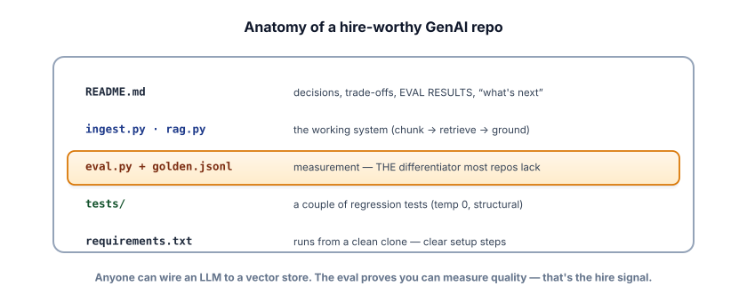

Portfolio playbook
A portfolio is a few public projects that show you can build things, not just talk about them.
Thousands of people can say “I've used the API”. Very few can show a working system they measured.
One excellent project beats five half-finished tutorial copies.
It needs a README that explains your decisions, an evaluation with real numbers, and setup steps that work.
A busy reviewer gives it about a minute and a half, so the good parts must be on top.
A portfolio repo is like a house for sale. Buyers decide in minutes: the view from the street, the photos, the survey report, a look into one or two rooms, and whether the paperwork is in order.
| In the picture | In the real system |
|---|---|
| The view from the street | The top of the README: what it does and the headline numbers |
| The photos | A screenshot or short demo, visible without any setup |
| The survey report | Key decisions and Results: eval scores and honest limits |
| Looking into one or two rooms | Opening one or two source files to check they are tidy |
| The paperwork history | Commit history that grew like real work, not one big dump |
Where the picture breaks. A buyer can't copy the house to test it. A reviewer can clone your repo, and if it doesn't run from a clean clone the viewing is over on the spot.
Going deeper
Knowledge gets you through the door; evidence gets you the offer. This lesson turns your capstones into a portfolio a hiring manager can skim in two minutes and think, “this person can ship.”
Why a portfolio decides it
The GenAI market is loud. Thousands of applicants can say “I’ve used the OpenAI API.” Very few can show a working system they built, measured, and can defend. A portfolio is how you move from a claim (“I know RAG”) to proof (“here’s a RAG app, here are its eval scores, here’s why I chunked it this way”). In a stack of résumés that all list the same buzzwords, a real repo with real results is the thing that makes a reviewer stop scrolling.
One rule above all: depth beats breadth. A single flagship project done genuinely well — built, evaluated, documented, and reflected on — outperforms five half-finished tutorial clones every time. Pick the RAG assistant (capstone 14.1) as your flagship and make it excellent. Add one or two more only after the first is something you’re proud of.
What a hire-worthy repo contains

The code is table stakes. Three things lift a repo from “toy” to “hire signal”:
1 · A README that explains your thinking. Reviewers read the README, not every line of code. It should answer, fast: what problem does this solve, what does it do (with a screenshot or short clip), how does it work, what did you decide and why, how well does it work (numbers), what are its limits, and how do I run it. Decisions and trade-offs are what signal an engineer rather than a copier.
2 · An eval. An eval.py plus a small golden.jsonl (from Track 6) that measures your system’s quality is the single rarest, most senior signal in a junior-to-mid portfolio. It says: I don’t just build, I measure. Put the numbers in the README.
3 · It runs from a clean clone. If a reviewer clones your repo and it errors, the conversation’s over. Pin versions in requirements.txt, use a free/local model (Ollama) or make the key optional, and write the exact setup steps. Test it yourself in a fresh folder.
The README template
Copy this skeleton into every project. Filling it honestly forces you to do the senior parts (decisions, evaluation, limits) instead of skipping them.
# Project name — one-line description
A grounded Q&A assistant over [whose] documents, built with [stack].
## Demo
 <!-- a 15-second screen capture beats paragraphs -->
## What it does
- Answers questions using ONLY the provided docs, with citations.
## How it works
Ingest → chunk → embed → store (Chroma) → retrieve (hybrid) → rerank → grounded answer.
## Key decisions & trade-offs
- Chunk size 500 w/ 50 overlap — why.
- Hybrid (BM25 + dense) because pure vector missed exact product names.
## Results (evaluation)
- Recall@5: 0.86 · Faithfulness: 0.92 on a 40-question golden set.
- Failure modes I found and what I did about them.
## Limitations & next steps
- Struggles with multi-hop questions; would add query decomposition.
## Run it
```
pip install -r requirements.txt
ollama pull qwen2.5:7b
python ingest.py && python app.py
```Where to put it, and how to point at it
Push each project to GitHub and pin your best 2–3 on your profile so they’re the first thing anyone sees. Then make them discoverable: a short write-up (a blog post or even a LinkedIn article) titled like “What I learned building a RAG assistant that actually cites its sources” does double duty — it teaches you to explain your work (interview gold) and it puts your name on the exact keywords recruiters search. A 60–90 second screen recording of the thing working, linked from the README, is worth more than another paragraph.
- Evidence > claims. A working, measured repo is what separates you in a buzzword-flooded market.
- Depth > breadth: one excellent flagship (the RAG assistant) beats five tutorial clones.
- The README sells the project — lead with the demo, decisions, and eval numbers.
- An eval harness is the rarest, most senior signal you can show. Include one.
- It must run from a clean clone on free/local models — pin versions, write exact steps, test in a fresh folder.
Take whichever capstone you’ve started and write its README using the template above — actually fill in the “Key decisions” and “Results” sections (run your eval if you have one). Then do the hard test: clone your own repo into a brand-new folder and follow your own setup steps exactly. Fix whatever breaks.
▸ What “good” looks like
A strong “Key decisions” entry reads like reasoning, not a setting: “I used 500-character chunks with 50 of overlap. Smaller chunks (200) raised precision but split definitions across boundaries, hurting answers to ‘what is X’ questions; 500 kept most definitions whole while staying well under the context budget. I’d revisit this per-corpus.”
A strong “Results” entry has numbers and honesty: “On a 40-question golden set: Recall@5 = 0.86, faithfulness (LLM-judge) = 0.92. The 14% of misses were mostly multi-hop questions needing two documents — a known limitation I note below.”
Why this is the bar: any reviewer reading those two sections learns that you make decisions deliberately, measure outcomes, and know your system’s weaknesses — which is precisely the difference between someone who followed a tutorial and someone they can trust with production. The clean-clone test matters because “works on my machine” is the most common reason a promising repo dies on contact with a reviewer.
Four candidates submit GitHub profiles. Which is the strongest hiring signal for an applied GenAI role?
What makes one portfolio project stand out to a hiring manager?
It helps to know how repos are actually judged, because it’s faster and shallower than you’d hope. A busy reviewer spends roughly a minute and a half: they read the top of the README, glance at a screenshot or demo, skim the “decisions” and “results” sections, open one or two source files to check that the code is organized and not copy-pasted slop, and maybe scroll the commit history to see whether it grew like real work or appeared in one dump. They are looking for reasons to advance you, but they’re triaging dozens of profiles, so anything confusing is a reason to move on.
Design for that review. Front-load the README with the punchline (what it does, that it’s evaluated, the headline numbers) so the first ten seconds land. Make the demo visible without setup. Keep the code tidy enough that the one file they open looks intentional. And let the commit history tell a story of iteration — small, honest commits over days read as genuine engineering, where a single “initial commit” of everything reads as a download. You can’t control which reviewer you get, but you can make the two-minute version of your project unmistakably strong.
Your work is now legible. The last piece is making sure you are legible to a hiring manager — especially the decade of experience you’re bringing. Next: positioning your data-engineering background.
In one line: Ship one project you can prove works, and put the proof where a reviewer looks first.